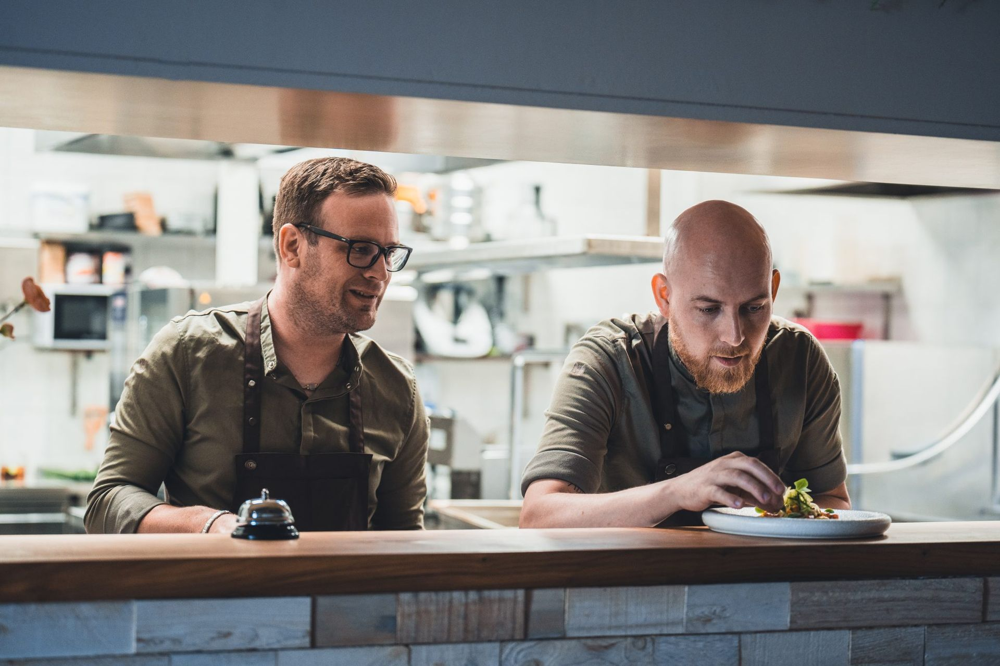
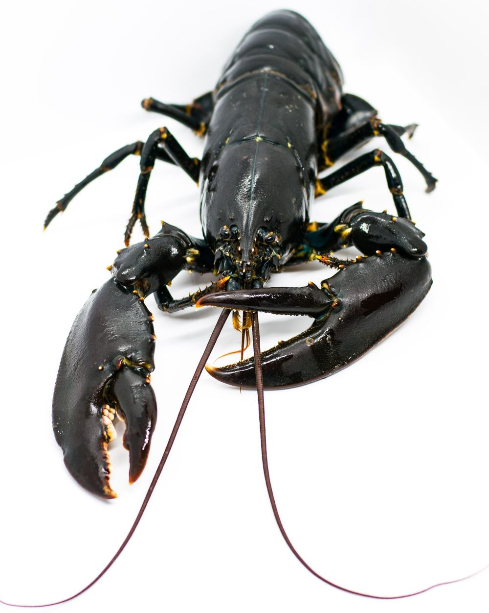
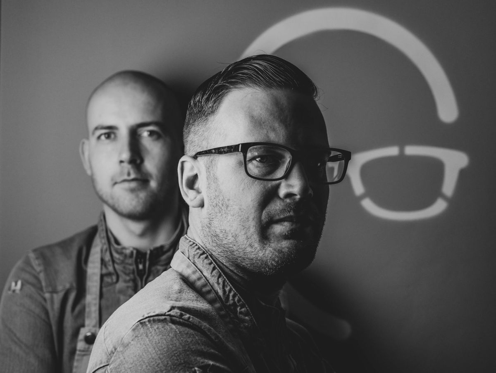
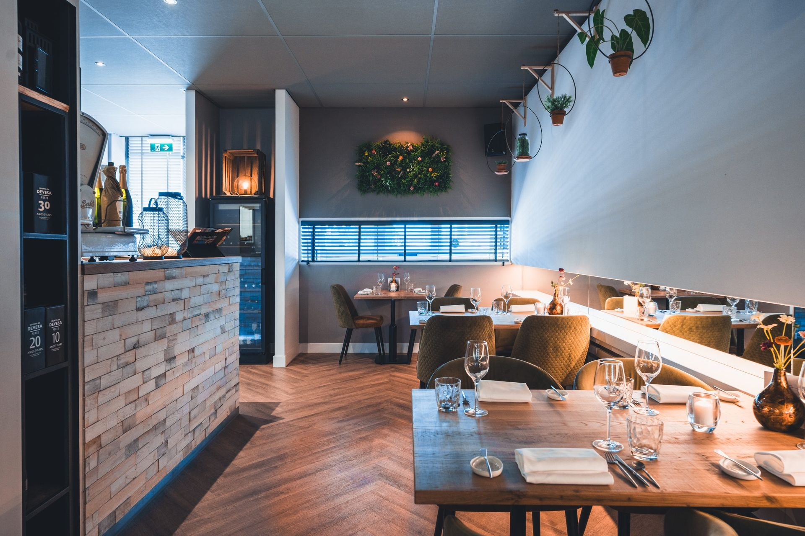
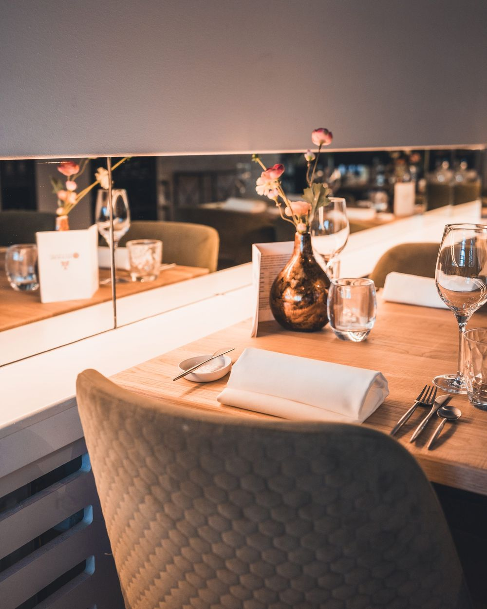
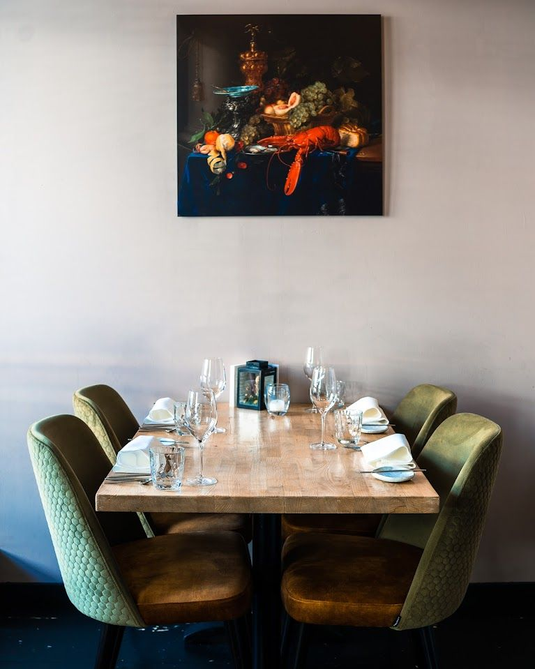
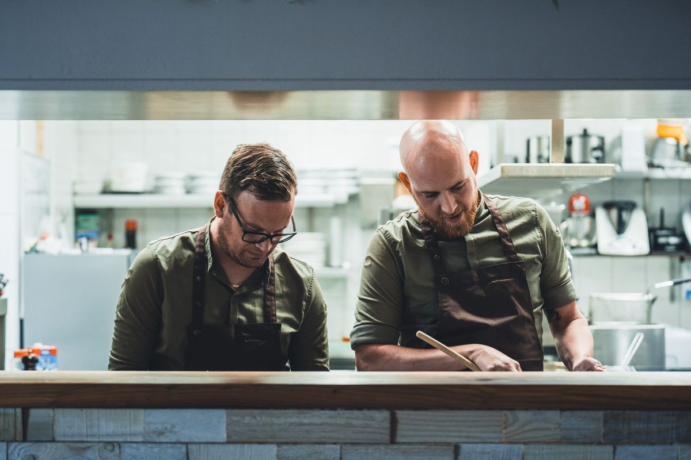

Smaakvol, puur en verrassend
Elke 3 weken een nieuw seizoensmenu van 3 tot 7 gangen, dagvers bereid door chefs Marc en Niek. Verborgen achter een gevel aan de Piet Heinstraat in Goes.

Kreeft uit ons eigen homarium
In ons homarium, een zoutwater leefsysteem, zie je de kreeften gewoon zitten. Ook onze oesters serveren we hier direct uit. Van april tot half juli is het seizoen van de Oosterscheldekreeft, daarbuiten serveren we Europese of Canadese kreeft.
Kreeft kan als toevoeging op het menu, of als kreeftenmenu van 3 tot 7 gangen: salade, bisque en een halve kreeft natuur als hoofdgerecht.
- À la minute gekookt
- Zeeuwse oesters
- Kreeftenmenu 3 tot 7 gangen
- Lid Stichting Promotie Oosterscheldekreeft
Kreeft eten? Reserveer vooraf, dan zorgen we dat er genoeg kreeften zijn. De prijs hangt af van de aanvoer.

Over Kale & de Bril
"Een plek waar we zelf ook graag zouden gaan eten. Huiselijk, sociaal, informeel en natuurlijk heerlijk vers bereid eten."Marc & Niek
Marc Everse (Kale) en Niek Traas (Bril) zijn allebei eigenaar en chef. Het plan voor het restaurant schreven ze op Bonaire, waar ze met hun gezinnen woonden en werkten. Op 2 januari 2018 gingen de deuren in Goes open.
We hebben niet veel zitplaatsen, dus we maken alles dagvers in onze eigen keuken. Bij de gerechten adviseert onze gastheer bijpassende wijnen, of een arrangement met alcoholvrije dranken.




Reserveren
Laat weten wanneer je komt en met hoeveel personen, dan bevestigen we je tafel zo snel mogelijk. Liever bellen of appen kan natuurlijk ook.
Restaurant Kale & de Bril
Bel of app ons voor een tafel, kreeft of een vraag over het menu.